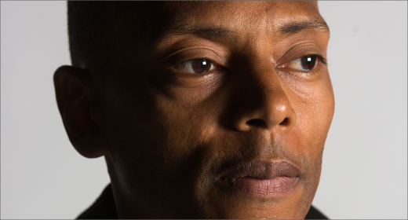
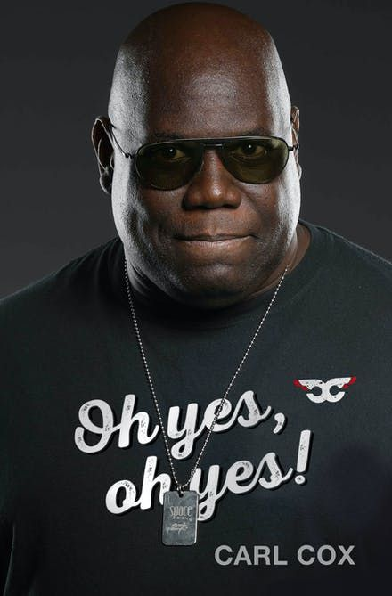

YouTube Link
The Three YouTube Link Given HEre Were Selected By The Creator Of The Page
- Looking For Music To Listen To While Driving Link
- Looking For Music To Listen To Whele Walking Link
- Music To Listening To While Reading aBook Link
Richie Hawitin
Richard "Richie" Hawtin (born June 4, 1970) is a British-Canadian electronic musician and DJ. He became involved with Detroit techno's
second wave in the early 1990s,[1] and has been a leading exponent of minimal techno since the mid-1990s.[2] He became known
for his recordings under the Plastikman and F.U.S.E. aliases. Under the latter, he released his debut album Dimension Intrusion (1993)
as part of Warp's Artificial Intelligence series.
Jeff Mills

Jeff Mills (born June 18, 1963, in Detroit, Michigan), also known as "the Wizard", is an American DJ, record producer, and composer.
[1][2] In the late 1980s Mills founded the techno collective Underground Resistance with fellow Detroit techno producers 'Mad'
Mike Banks and Robert Hood but left the group to pursue a career as a solo artist in the early 90s.[2] Mills founded the Chicago
based Axis Records in 1992,[3] which is responsible for the release of much of his solo work.
Carl Cox

Carl Cox (born 29 July 1962) is a British house and techno club DJ, radio DJ and record producer. He is based in Frankston, Victoria,
Australia.
Cox has won and been nominated for numerous awards. He has performed at numerous clubs and electronic music or dance events worldwide.
He has hosted a residency known as "Music is Revolution" every summer season at the Space Ibiza nightclub, from 2001 to 2016. He
has featured his own "Carl Cox & Friends" stage at many festivals, such as Ultra Music Festival, The BPM Festival and Tomorrowland. Cox has
also served as a monthly DJ for BBC Radio 1's Essential Mix.